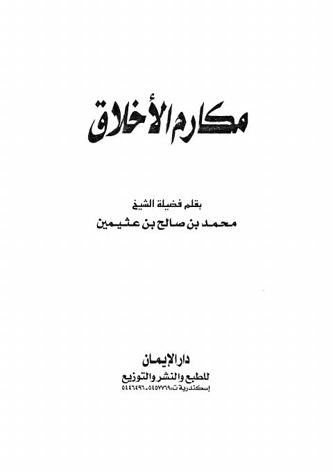

Downloads need an internet connection.
مكارم الأخلاق
Authors: محمد بن صالح العثيمين
Publishers: دار الإيمان
**▫️ العنوان: مكارم الأخلاق** ▪️ المؤلف: #محمد_بن_صالح_بن_عثيمين ▫️ الناشر: #دار_الإيمان ▪️ تاريخ النشر: 2001 ▫️ بلد النشر: الإسكندرية، #مصر ▪️ الطبعة: 1 ▫️ عدد الأجزاء: 1 ▪️ الصفحات: 64 ▫️ نوع الوعاء: #كتاب ▪️ التصنيف الرئيسي: #الزهد_والرقائق ▫️ التصنيف الفرعي: #رمضانيات ۪